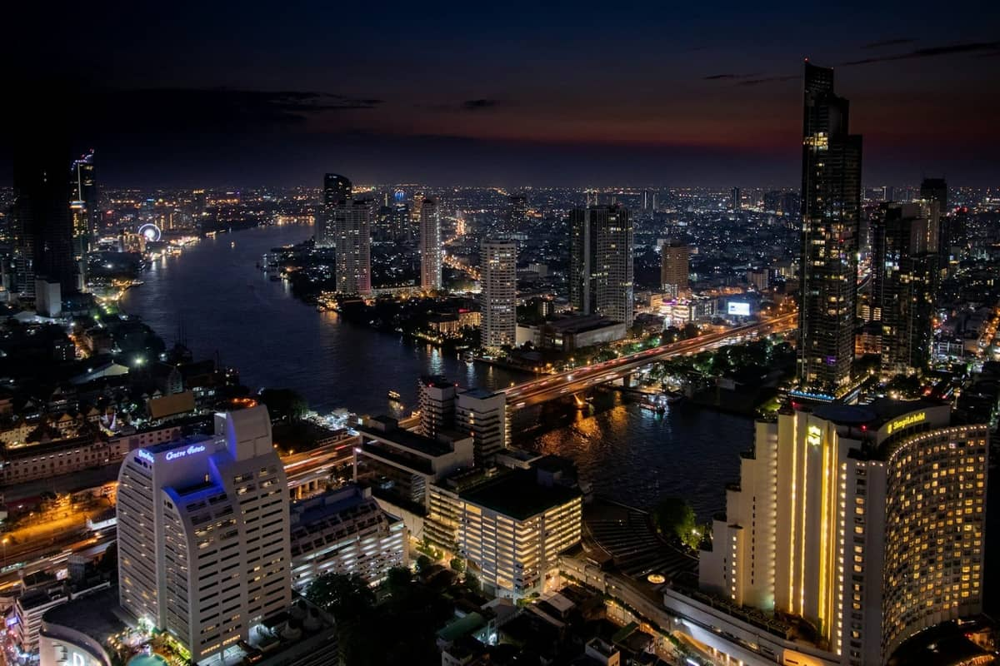
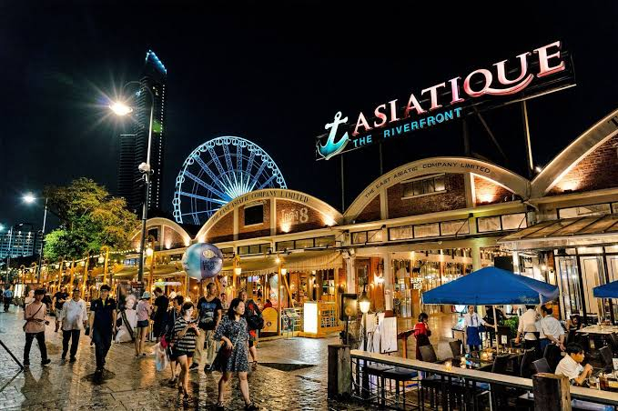
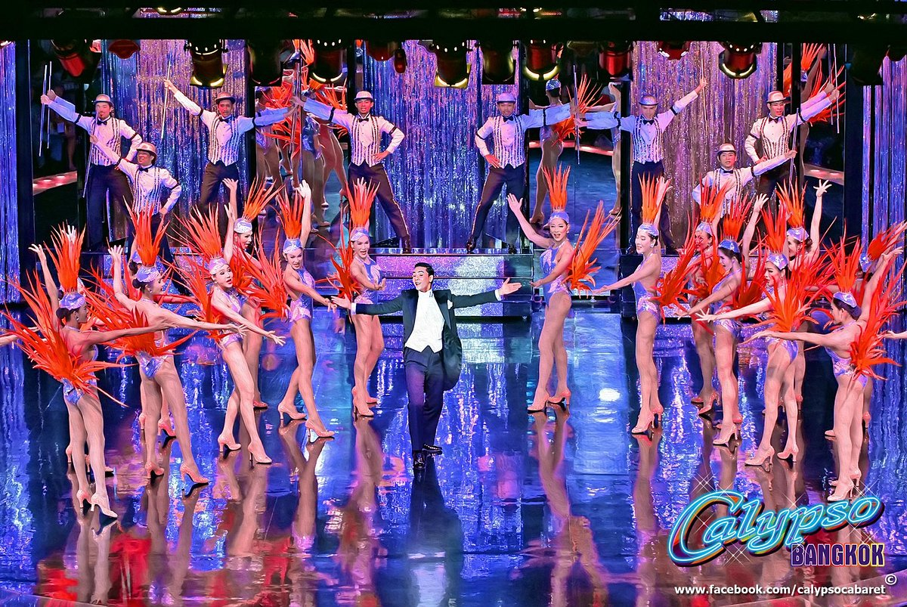

Асиатик — Asiatique The Riverfront

Asiatique The Riverfront — большой вечерний торгово-развлекательный комплекс на берегу реки Чао Прайя в Бангкоке. Здесь можно совместить прогулку у реки, шопинг, тайскую еду и различные развлечения в одном месте.
Асиатик особенно популярен вечером, когда загораются многочисленные огни, открываются магазины и рестораны, а набережная превращается в одно из самых оживлённых мест Бангкока. Вход на территорию комплекса бесплатный. Комплекс находится на месте бывшего портового района East Asiatic Company. Старые складские здания были восстановлены и превращены в современное пространство с магазинами, ресторанами и развлечениями.
Что такое Асиатик
Asiatique занимает большую территорию вдоль Чао Прайи. На ней расположены многочисленные магазины, кафе, рестораны и развлекательные площадки. Всего здесь более 1 500 магазинов и десятки ресторанов. Территория разделена на несколько зон, поэтому здесь можно провести несколько часов, просто гуляя между зданиями, рассматривая товары и выходя к реке.
История места
История Асиатика связана с East Asiatic Company — датской торговой компанией, которая работала в Сиаме и использовала этот участок берега как порт и складскую территорию.
Старые складские здания сохранились и сегодня являются одной из главных особенностей комплекса. В результате получилось интересное сочетание исторической архитектуры, современной торговли и вечерних развлечений. Современный Asiatique The Riverfront открылся в 2012 году после реконструкции бывшей портовой территории.
Что посмотреть и чем заняться
Набережная Чао Прайя
Одно из главных преимуществ Асиатика — расположение непосредственно у реки. Здесь можно спокойно прогуляться вдоль воды, посмотреть на проходящие лодки и сделать фотографии вечернего Бангкока.

Asiatique Sky
Asiatique Sky — большое колесо обозрения, которое стало одним из главных символов комплекса. Его высота составляет около 60 метров.
С верхней точки открывается панорамный вид на Чао Прайю, территорию Асиатика и вечерний Бангкок. Полный круг на колесе занимает примерно 20 минут. Asiatique Sky работает ежедневно примерно с 16:00 до 00:00. Билет оплачивается отдельно от входа на территорию Асиатика.
Магазины и рынок
На территории комплекса находится огромное количество магазинов. Здесь можно найти одежду, аксессуары, сувениры, изделия ручной работы, тайскую косметику и различные подарки.

Цены сильно различаются в зависимости от магазина, поэтому Асиатик подходит как для обычной прогулки, так и для покупки сувениров домой.
Рестораны и уличная еда
В Асиатике работает множество ресторанов, кафе и небольших заведений. Можно попробовать традиционные тайские блюда, морепродукты, различные закуски и уличную еду.
Особенно приятно поужинать ближе к реке, когда территория уже освещена и температура становится комфортнее.
Calypso Cabaret
Calypso Cabaret — одно из известных вечерних шоу Асиатика. На сцене проходят музыкальные и танцевальные выступления с яркими костюмами и постановкой.

Шоу является отдельным развлечением и требует покупки билета. Перед посещением лучше заранее проверить расписание представлений.
Старые складские здания
Прогулка между историческими зданиями — отдельная часть впечатления от Асиатика. Многие здания сохранили промышленный характер старого портового района. Особенно хорошо архитектура комплекса выглядит вечером, когда здания, улицы и витрины подсвечиваются.
Атмосфера вечером
Асиатик лучше всего посещать именно вечером. Днём многие магазины и рестораны ещё закрыты, а основная жизнь комплекса начинается ближе к 16:00–17:00. Примерно после 18:00 здесь становится значительно оживлённее. Можно сначала прогуляться по территории, затем выйти к реке, покататься на колесе обозрения и закончить вечер ужином.
Когда лучше приходить
Если хочется спокойно посмотреть территорию и сделать фотографии, можно приехать около 17:00–17:30. В это время ещё достаточно светло, а постепенно начинается вечерняя жизнь комплекса.
Если главная цель — почувствовать атмосферу ночного рынка, поужинать, посмотреть огни и покататься на колесе обозрения, оптимальным временем будет 18:00–21:30.